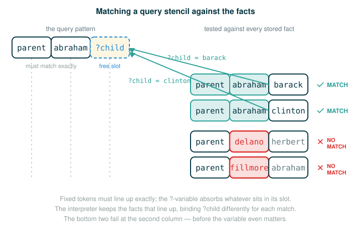

4.4.1 Facts, Queries, and Logical Matching
By the end of this lesson you will be able to do five things. You will write a fact that records a relationship. You will ask a query and predict whether it succeeds or fails. You will read a variable that begins with a question mark and say what it can stand for. You will write a compound fact that defines one relationship in terms of another. And you will explain negation as failure, which is the one rule in this lesson most likely to surprise you.
You do not need to have written any logic programs before. You do need one habit from the very first lesson of this course: when a line looks strange, slow down and separate it into its smallest meaningful pieces. That habit matters even more here, because the language in this lesson is written in parentheses and looks almost like Scheme, yet it means something different.
A Bulletin Board of Facts
Picture a bulletin board at the front of a classroom. Students walk up and pin index cards to it. Each card records one plain statement of fact:
Sam is enrolled in algebra.
Maya is enrolled in chemistry.
Jordan is Maya's lab partner.None of those cards tells anyone what to do. There is no recipe, no sequence of steps, no procedure. Each card simply records that some relationship holds.
Now a student walks up and asks a question out loud:
Who is enrolled in chemistry?A helpful classmate reads down the cards, finds the one that fits, and answers:
MayaThat is exactly the spirit of logic programming. You write down relationships that are true. Then you ask questions. A program called the query interpreter reads your facts and reports the values that make your question true. You never tell it how to search. You only describe what is true and what you want to know.
Describing Relationships Instead of Steps
Chapter 4 has been moving steadily from telling the computer how to do something toward telling it what you want. This lesson takes the final step.
In the previous section you wrote SQL, where you described the rows you wanted and the database figured out how to find them. Logic programming goes one step further: you describe facts that are true, rules for deriving new facts, and questions you want answered.
The language in this lesson is called logic. It is a small declarative query language designed for this text. It is based on Prolog (a well-known logic-programming language) and on the declarative language in Structure and Interpretation of Computer Programs, a classic computer-science textbook. You do not need any prior knowledge of either. Its data records are written as Scheme lists, and its queries are written as Scheme values. The official logic interpreter is a complete implementation that depends on the Scheme interpreter you built in the previous chapter, which is why these records look Scheme-shaped even though their meaning is different from ordinary Scheme evaluation.
That last point is worth dwelling on, because it is the most common early confusion. A logic program looks like Scheme:
(fact (parent abraham barack))But it does not mean the same thing as a Scheme procedure call. In Scheme, a parenthesized list is usually read as an operator applied to operands:
(operator operand operand ...)In logic, the same shape declares a relationship:
(relationship item item ...)So the inner list (parent abraham barack) is not asking Scheme to call a function named parent. It is declaring that a relationship named parent holds between abraham and barack. The relation name parent does not have to be defined ahead of time. In this language, a relation begins to exist the moment a fact or rule uses its name. Relations are never applied like procedures; they are matched against queries.
The mental model for the whole lesson fits on one line:
facts + query -> query interpreter -> matching substitutionsA substitution is an assignment of a value to a query variable. If the variable ?child is given the value barack, then the pattern (parent abraham ?child) becomes (parent abraham barack), which matches a stored fact, so it counts as a successful answer.
Writing Simple Facts
The source introduces facts through a dog breeder with an interest in U.S. Presidents, who records the genealogy of her dogs in the logic language. The database records which dog is the parent of which other dog:
(fact (parent abraham barack))
(fact (parent abraham clinton))
(fact (parent delano herbert))
(fact (parent fillmore abraham))
(fact (parent fillmore delano))
(fact (parent fillmore grover))
(fact (parent eisenhower fillmore))Read the first fact out loud as: the dog Abraham is the parent of the dog Barack. The keyword fact tells the interpreter to store the relationship that follows as true. The inner list (parent abraham barack) is the relationship itself.
Here is the anatomy of that first fact, one token at a time. Read down the branches; the last row is what the whole line does.
(fact (parent abraham barack))
├─ fact ........ keyword: store the following relationship as true
├─ parent ...... the relation name
├─ abraham ..... first object in the relationship
├─ barack ...... second object in the relationship
└─ action registers "abraham is the parent of barack" as a factThe outer parentheses group the whole fact statement. The inner parentheses group the relationship record. Nothing here is being run the way a function call is run. The statement is being filed away as information, exactly like pinning a card to the board.
Asking a Query
A query begins with the keyword query instead of fact. A query may contain variables, which are symbols that begin with a question mark. The interpreter matches those variables to the stored facts. The source asks:
(query (parent abraham ?child))Here is the anatomy. Notice the only change from a fact is the keyword and the question mark.
(query (parent abraham ?child))
├─ query ....... keyword: search the facts instead of storing one
├─ parent ...... the relation name to match
├─ abraham ..... first object, must match exactly
├─ ?child ...... variable: stands for any value that makes a match
└─ action report every value of ?child that matches a stored factThe symbol ?child is a variable because it begins with a question mark. The query means: find every value for ?child that makes the relation (parent abraham ?child) true against the database.
The query interpreter responds with Success! to indicate that the query matches at least one fact, and then reports the value that ?child took for each match. Two facts in the database start with parent and abraham, namely (parent abraham barack) and (parent abraham clinton), so ?child can be barack or clinton. This is not assignment in the Python sense, where a name is bound once to a value you compute. It is matching: the interpreter reports, for each fact that fits, what ?child would have to be.
Matching One Pattern Against Many Facts
It helps to think of a query as a stencil with a blank cut out of it. The query (parent abraham ?child) is the stencil (parent abraham ___). The interpreter slides that stencil over every stored fact and keeps the ones that line up:
(parent abraham barack) matches
(parent abraham clinton) matches
(parent delano herbert) does not match
(parent fillmore abraham) does not matchThe first two match because the relation name parent and the first object abraham are identical to the stencil, and the variable ?child is free to stand for the third object. The last two fail before the variable even matters, because the first object is not abraham.

This is the first real conceptual shift away from Python. A Python function computes one result by executing steps. A logic query searches for every substitution that makes a relation true, and there may be zero, one, or many.
Variables Begin With a Question Mark
A logic variable is any symbol whose name starts with ?. These are all variables:
?child
?parent
?who
?c
?pThese are not Python variables. They are not boxes in memory that hold a value you assigned. They are placeholders inside a logical pattern. When the interpreter finds a match, it reports what each placeholder must be for the match to hold.
A warm-up before the official examples grow more complex. Suppose you only wanted to know the children of fillmore, and you scanned the parent facts by eye:
(parent fillmore abraham)
(parent fillmore delano)
(parent fillmore grover)Each of those has fillmore in the parent slot, so by eye the children of fillmore are abraham, delano, and grover. A query lets you ask for exactly that without scanning by hand, which is what the compound facts below will let you do.
A Query Can Have More Than One Variable
A single query may use more than one variable at once, and each blank is filled independently for each match. The following query is an illustration constructed from the official parent facts to show the idea; it is not one of the source's printed examples, but it uses only facts the source provides:
(query (parent ?parent ?child))Its stencil has two blanks:
(parent ___ ___)Every fact in the parent database fits a stencil that constrains nothing but the relation name, so each match reports a value for both variables at once. Reading the seven parent facts, the pairs are abraham/barack, abraham/clinton, delano/herbert, fillmore/abraham, fillmore/delano, fillmore/grover, and eisenhower/fillmore. The point to carry forward is that two variables in one query are filled together, as a matched set, for each fact that fits.
Compound Facts
Facts can do more than record single relationships. A fact may also contain variables and several sub-expressions, which lets you derive new relationships from ones already in the database. A multi-expression fact begins with a conclusion, followed by hypotheses. For the conclusion to be true, all of the hypotheses must be satisfied. The source gives the general shape:
(fact <conclusion> <hypothesis0> <hypothesis1> ... <hypothesisN>)Read it as: the conclusion is true whenever all of the hypotheses are true. This matches a rule in ordinary speech, such as "someone is a customer if that person bought something."
Using this shape, the source defines the relation child entirely in terms of the relation parent:
(fact (child ?c ?p) (parent ?p ?c))Here is the anatomy. The conclusion is the first inner list; the hypothesis is the second.
(fact (child ?c ?p) (parent ?p ?c))
├─ fact .............. keyword: store this rule as true
├─ (child ?c ?p) ..... conclusion: ?c is a child of ?p
├─ (parent ?p ?c) .... hypothesis: ?p is a parent of ?c
└─ action register the rule "?c is a child of ?p whenever ?p is a parent of ?c"Read the rule slowly: ?c is the child of ?p, provided that ?p is the parent of ?c. The variable names are deliberately the same in both parts. That is how the interpreter ties the conclusion to the hypothesis: whatever ?c stands for in child must be the very thing ?c stands for in parent, and likewise for ?p. The two lists are linked through their shared variables.
Using a Compound Fact
Now a query can refer to that rule. The source asks which dogs are children of fillmore:
(query (child ?child fillmore))There are no plain child facts stored in the database. To answer this, the interpreter must combine the rule that defines child with the various parent facts about fillmore. As the user of the language, you do not need to know how that combination happens, only that the answer will have a particular form. It is up to the query interpreter to prove, for instance, that (child abraham fillmore) is true given the available facts.
Reasoning through it by hand shows why. Matching the rule against the query forces ?p to be fillmore, which turns the hypothesis (parent ?p ?c) into the requirement (parent fillmore ?child). The database has three facts of that form, namely (parent fillmore abraham), (parent fillmore delano), and (parent fillmore grover), so the children of fillmore are abraham, delano, and grover.
Notice the power here. You never wrote a procedure that loops over facts to find children. You wrote one relationship between child and parent, and the interpreter did the searching.
Queries Without Variables
A query is not required to contain any variables. It may simply verify that a specific relation is true. The source asks:
(query (child herbert delano))This asks whether herbert is the child of delano. Using the child rule, that reduces to asking whether delano is the parent of herbert. The database contains (parent delano herbert), so the query succeeds. With no variables to report, the interpreter simply confirms success.
A query can also fail. A query that does not match any facts returns failure. The source gives:
(query (child eisenhower ?parent))This asks who eisenhower is a child of. To answer it, the interpreter looks for a fact of the form (parent ?parent eisenhower). No such fact exists in the database, so the query returns failure.
Negation as Failure
The source introduces a special keyword, not, that checks whether some relation does not match any fact. Its shape is:
(query (not <relation>))The rule is precise: this query succeeds if <relation> fails, and it fails if <relation> succeeds. This idea is known as negation as failure.
The phrase is doing real work. It does not mean the interpreter knows that the relation is false in the world. It means the interpreter could not prove the relation from the facts it currently has. Absence of proof is treated as failure.
Walk through the source's three examples. First:
(query (not (parent abraham clinton)))The inner relation (parent abraham clinton) is a stored fact, so it succeeds. Because the inner relation succeeds, the not query fails.
Second:
(query (not (parent abraham barack)))The inner relation (parent abraham barack) is also a stored fact, so it succeeds as well, and again the negation fails.
Third, the source asks you to think carefully before reading the answer:
(query (not (parent abraham ?who)))At first this looks like it should succeed, because surely there are many symbols that could be bound to ?who for which Abraham is not the parent. But the steps for negation say to first inspect the inner relation (parent abraham ?who). That relation succeeds, since ?who can be bound to either barack or clinton. Because the inner relation succeeds, the negation of it must fail.
The lesson to lock in: not never goes looking for a value that makes the inside false. It tries to prove the inside, and only succeeds when that proof cannot be found at all.
▶Step-Through Checkpoint
The block below is a small piece of matching machinery. It is a beginner bridge, not the full logic interpreter: one query pattern, scanned against each stored fact, with a tiny unify helper that handles one ?-variable the way the real interpreter handles many. Stepping through it draws the environment diagram the matching really builds. Each unify call opens its own frame, and inside that frame result starts as a copy of bindings. When a token starts with ?, the matching adds a "?child" entry to result before the call hands it back to the loop. Before stepping through it, write down three predictions: what prints before the loop begins, how many of the seven unify calls return a dictionary rather than None, and what result holds when unify returns for the second fact.
# (1)
facts = [
("parent", "abraham", "barack"),
("parent", "abraham", "clinton"),
("parent", "delano", "herbert"),
("parent", "fillmore", "abraham"),
("parent", "fillmore", "delano"),
("parent", "fillmore", "grover"),
("parent", "eisenhower", "fillmore"),
]
def unify(pattern, fact, bindings):
if len(pattern) != len(fact):
return None
result = dict(bindings)
for token, value in zip(pattern, fact):
if token.startswith("?"):
if token in result and result[token] != value:
return None
result[token] = value
elif token != value:
return None
return result
query = ("parent", "abraham", "?child")
print("Success!")
for fact in facts:
bindings = unify(query, fact, {})
if bindings is not None:
print("child:", bindings["?child"])
Check each prediction as you step. Success! appears first, printed unconditionally; the real interpreter announces it only after finding a match. Inside unify, a token that starts with ? records a binding (and refuses to change a binding it already made), while any other token must match exactly, so only the two abraham facts hand back a dictionary, first {"?child": "barack"} and then {"?child": "clinton"}. The run prints child: barack and child: clinton, the same two children the real interpreter reports for (query (parent abraham ?child)).
⚠Common Beginner Traps
- Reading
(parent abraham barack)as a call to a function namedparent. Inlogicit declares or matches a relationship; nothing is applied. - Treating
?childlike a Python variable. It is a logic variable, a placeholder used during matching, not a box in memory you assigned to. - Forgetting that a compound fact has two roles: a conclusion first, then one or more hypotheses, and the conclusion holds only when every hypothesis does.
- Forgetting that the shared variable names inside a rule are what connect the conclusion to the hypothesis. In
(fact (child ?c ?p) (parent ?p ?c)), the repeated?cand?pare the link. - Reading
notas ordinary truth about the world. It means "this relation cannot be proved from the current facts," which is negation as failure. - Expecting
(query (not (parent abraham ?who)))to hunt for a name Abraham is not the parent of. It fails because(parent abraham ?who)already succeeds, so its negation must fail.
✓Check Your Understanding
- Given the rule
(fact (child ?c ?p) (parent ?p ?c))and the parent facts above, what does the query(query (child ?child abraham))report for?child? - What makes
?childdifferent fromchild? - What does
(fact (child ?c ?p) (parent ?p ?c))say in ordinary English, and what do the repeated variable names accomplish? - The query
(query (child eisenhower ?parent))fails. What stored fact would the interpreter have needed to find, and why is there none? - Why does
(query (not (parent abraham ?who)))fail, even though Abraham is not the parent of most dogs in the database?
Show the answers
- The
childrule turns(child ?child abraham)into the requirement(parent abraham ?child), so it reports the children ofabraham:?childcan bebarackorclinton. ?childbegins with a question mark, so it is a logic variable that can be bound to a value during matching.childwithout the?is an ordinary symbol that must match itself exactly.- It says that
?cis a child of?pwhenever?pis a parent of?c. The repeated names?cand?plink the conclusion to the hypothesis, forcing each variable to stand for the same thing in both lists. - It would have needed a fact of the form
(parent ?parent eisenhower), naming someone whose child iseisenhower. No such fact exists in the database, so the query returns failure. - Negation first tries to prove the inner relation
(parent abraham ?who). That relation succeeds, because?whocan bebarackorclinton. Negation as failure succeeds only when the inner relation cannot be proved, so because it can, the negation fails.
§Summary
Logic programming describes relationships instead of step-by-step procedures, like pinning facts to a bulletin board and then asking questions. A fact stores a relationship as true, written in a Scheme-shaped list whose first token names the relation. A query asks the interpreter to find every substitution of values for ?-variables that makes a relation true, reporting Success! with one line per match or Failed. when nothing matches. A variable is a placeholder that begins with ?, filled in during matching rather than assigned like a Python name, and a single query may carry several variables that are filled together. A compound fact pairs a conclusion with hypotheses and derives new relations from existing ones, linked through shared variable names, so the rule for child rides entirely on the parent facts. A query may also simply verify a relation with no variables at all. Finally, not implements negation as failure: it tries to prove the inner relation and succeeds only when that proof cannot be found, which is why proving Abraham has any child at all is enough to make its negation fail.